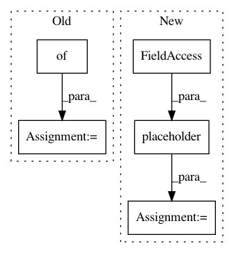

537fa61786b167655298cbd91717496c6588c3e3,testdata/dnn/tensorflow/generate_tf_models.py,,,#,664
Before Change
tf.import_graph_def(graph_def, name="")
inputData = gen_data(tf.placeholder(tf.float32, [1, 4, 6, 64], inp_node))
outputData = localSession.run(localSession.graph.get_tensor_by_name(out_node + ":0"),
feed_dict={inp_node + ":0": inputData})
writeBlob(inputData, "switch_identity_in")
writeBlob(outputData, "switch_identity_out")
// Uncomment to print the final graph.
After Change
inp = tf.placeholder(tf.float32, [1, 2, 3, 64], "Relu_8")
runModel(inp, "conv2d_transpose_1:0", "keras_deconv_same_v2")
////////////////////////////////////////////////////////////////////////////////////////////////////////////////////////////////////////////////////////////////
inp = tf.placeholder(tf.float32, [1, 2, 4, 3], "ContentImage")
runModel(inp, "Relu:0", "keras_batch_norm_training")
// Uncomment to print the final graph.
In pattern: SUPERPATTERN
Frequency: 3
Non-data size: 5
Instances
Project Name: opencv/opencv_extra
Commit Name: 537fa61786b167655298cbd91717496c6588c3e3
Time: 2019-06-11
Author: dmitry.kurtaev+github@gmail.com
File Name: testdata/dnn/tensorflow/generate_tf_models.py
Class Name:
Method Name:
Project Name: befelix/safe_learning
Commit Name: 41b907a18ee6e3c9c108c4d7abd37908cff9b1e4
Time: 2017-04-13
Author: fberkenkamp@gmail.com
File Name: safe_learning/reinforcement_learning.py
Class Name: PolicyIteration
Method Name: discrete_policy_optimization
Project Name: THUNLP-MT/THUMT
Commit Name: 5247ed31725f4a7626d66525a49749c54b84b6ea
Time: 2018-02-26
Author: playinf@stu.xmu.edu.cn
File Name: thumt/utils/hooks.py
Class Name:
Method Name: _evaluate